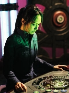
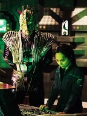
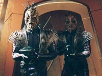
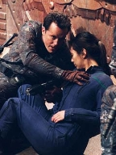

|
Enterprise
Temporada 3

Anlise do episdio por
Salvador Nogueira


|
MANCHETE
DO EPISDIO |
Comentrios:    
Primeiro, vale dizer que foi uma boa jogada ter Hoshi Sato
seqestrada pelos Reptilianos para que ela decifrasse a
encriptao do cdigo de acionamento dos Aquticos, que se
mantiveram neutros at aquele ponto. Alm de reforar a
importncia da oficial de comunicaes para a Enterprise (num
reconhecimento a seus talentos incomuns), permite que o personagem
aparea mais e d novas provas de sua lealdade e de sua fora
de carter e resistncia. O que se faz por ela aqui nunca pde
ser feito por Mayweather, durante toda a srie...
Melhor ainda foi a atuao de Archer, porque criou um problema:
a Enterprise agora precisaria de fato descobrir como desabilitar
as Esferas, algo que na verdade eles no sabiam at aquele
ponto. mais uma prova do desespero do capito para salvar a
Terra, horas antes do fim do prazo.
Um bom trabalho ainda feito com Reed e Hayes, na esteira da
perda de um MACO sob comando do oficial de armamentos da
Enterprise, em "The Council".
O major consegue salvar Hoshi Sato, mas no sobrevive misso.
Sua morte, na enfermaria, uma cena tocante que revela os laos
que, devagar e de forma tortuosa, acabaram se formando entre os
"dois chefes de segurana" da NX-01.
No difcil imaginar que as duas misses sero
bem-sucedidas. Mas como e a que custo? As respostas ficam para o
prximo segmento.
Archer - "After all your
deliberation you'll find that the reptiles have made your decision for
you."
("Depois de todas as suas discusses, voc vai descobrir que
os rpteis tomaram todas as decises por vocs.")
Trip - "When this is all over, I'm all ears."
("Quando isto tiver acabado, eu sou todo ouvidos.")
T'Pol - "I've considered formalizing my standing with Starfleet."
("Eu estou considerando formalizar minha posio para com a
Frota Estelar.")
Dollum - "Set a course for Earth."
("Marque um curso para a Terra.")
 A equipe de produo reportou que o trabalho do grupo de dubls tem
sido constante para o final da temporada, considerando o maior nmero
de cenas de ao ocorrendo a medida que o arco est chegando a sua
concluso.
A equipe de produo reportou que o trabalho do grupo de dubls tem
sido constante para o final da temporada, considerando o maior nmero
de cenas de ao ocorrendo a medida que o arco est chegando a sua
concluso.
Escrito por Andr Bormanis e
Chris Black
Direo de Robert Duncan McNeill
Exibido em 19/05/2004
Produo: 075
Elenco:
Scott
Bakula como Jonathan Archer
Jolene Blalock como
T'Pol
John Billingsley
como Phlox
Anthony Montgomery
como Travis Mayweather
Connor Trinneer como
Charlie 'Trip' Tucker III
Dominic Keating como
Malcolm Reed
Linda Park como Hoshi Sato
Elenco convidado:
Steven Culp como Major Hayes
Scott MacDonald como Comandante Rptil
Rick Worthy como Xindi-Preguia
Tucker Smallwood como Xindi-Humanide
Josette DiCarlo como Construtora da Esfera
Bruce Thomas como Soldado Rptil
Andrew Borba como Tenente Rptil
Mary Mara como Construtora da Esfera
Ruth Williamson como Lder dos Construtores da Esfera
Paul Dean como Tcnico Rptil
Sinopse, trivias e ficha
tcnica por Leandro
M.Pinto